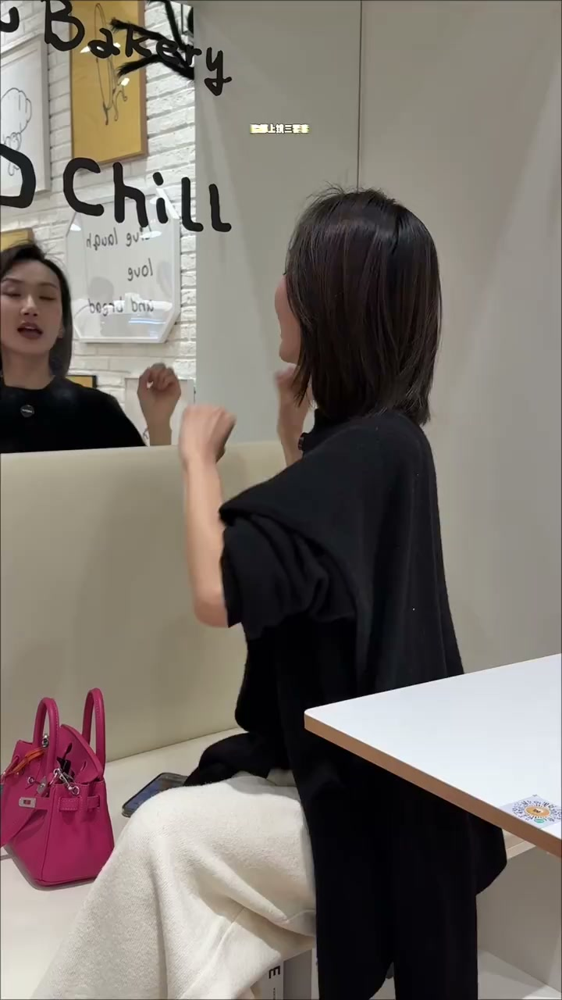
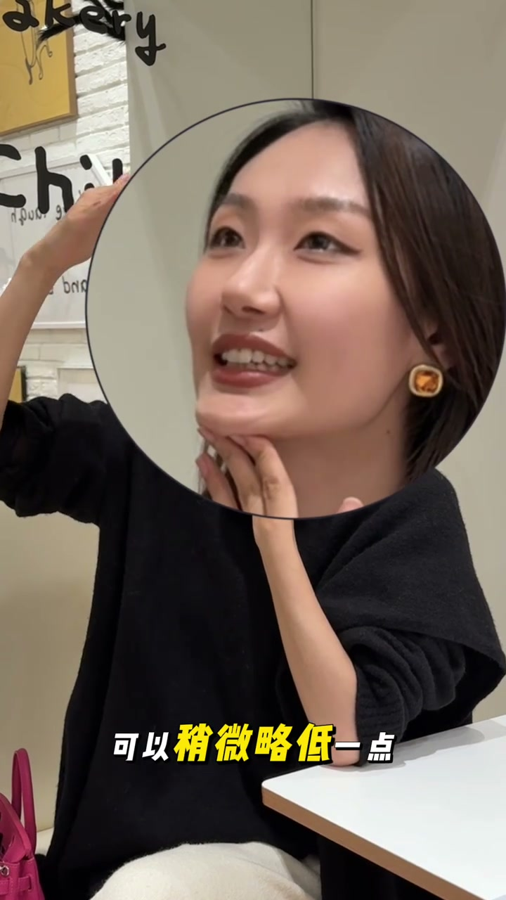

内容要点
[00:00] 臉部上進三要素
[00:01] 上偏眼神管理
[00:02] 當你拍側面的時候
[00:04] 全是眼白
[00:05] 先別動
[00:06] 我有方法
[00:07] 頭不動
[00:08] 讓眼珠子去找向手機的方向
[00:12] 當你抬頭的時候
[00:14] 是不是像翻白眼
[00:15] 先別動
[00:15] 我有方法
[00:17] 抬頭頭照樣抬著
[00:18] 這個時候咱們的眼珠子
[00:20] 可以稍微略低一點
[00:22] 從你腦門方向去延伸
[00:25] 當你低頭的時候
[00:26] 是不是像閉眼
[00:27] 先別動
[00:28] 我有方法
[00:29] 頭還是照樣的低
[00:30] 這時候眼珠子
[00:31] 去找向地板延伸的方向
[00:35] 當你拍正面的時候
[00:37] 像拍中間照
[00:38] 先別動
[00:38] 我有方法
[00:39] 依舊頭不動
[00:40] 眼珠子可以看向鏡頭的左邊
[00:44] 也可以看向鏡頭的右邊
[00:47] 別再說你們不會眼神管理了

